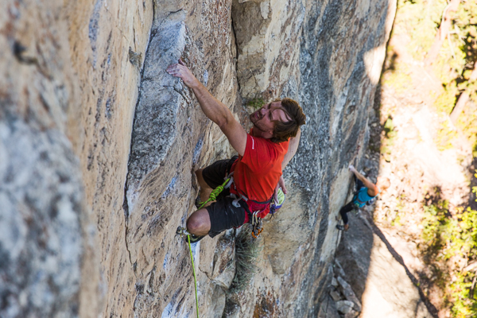
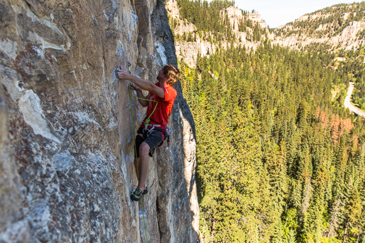
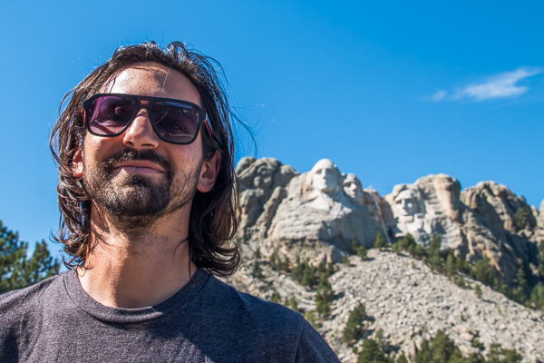
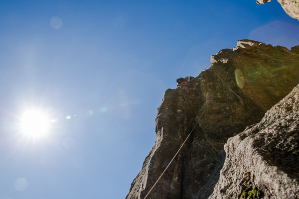
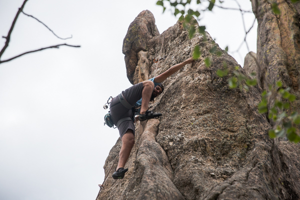
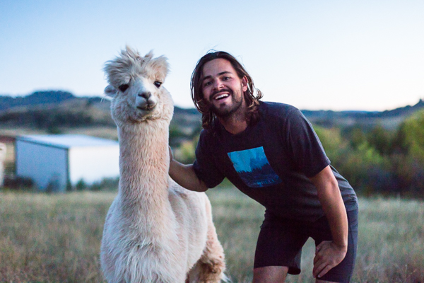

Earlier this year I got a text from my friend, Stan. It went something like, “When will you be in South Dakota? I just moved here with my parents to ranch alpacas. I’ve been doing a lot of climbing and it’d be rad to show you some of the climbs.”
That’s right. A friend of mine moved from Florida to South Dakota to ranch alpacas with his parents and there’s climbing nearby.

After a couple works days in Rapid City we met up with Stan and his friend Corey in Spearfish Canyon. Right from the get go Stan told me the climbing in the canyon was nothing like what we knew in the Southeast. Lots of steep faces, positive pockets, plenty of bolts, and open shuts that are good to lower off so no need for rappels.
The climbing was exactly what Stan had described. All the routes were steep and while the pockets were great holds to grab onto, finding a solid foot proved to be very tricky. The pockets were more like slots in the rock. When you’re eye level with them, they’re quite easy to see, but when they’re below you it’s tough to remember where they are to slide your toes into the slot.

Adam and I haven’t climbed much this year and it really showed. While Stan and Corey were climbing routes in the 5.11 range after just having climbed 5.12 the day before, Adam and I were struggling our way up 5.9’s and 5.10’s. Nonethless, it was still great to get some climbing in.
Original Photo Lost in the Archive
160911_SouthDakota_Spearfish-9208-1.jpg
From // South Dakota Has Climbing and Alpacas?
Fast forward a few days and we met up with my friend, Dave, and his parents at Mt. Rushmore. Dave has climbed at Wrinkled Rock numerous times. He went there every 4th of July with a friend that taught him to climb and he was kind enough to show us some routes.

The world’s a small place because we ran into Dave’s climbing sensei at the crag. After a little chit-chat we made plans to climb together the next day.
The climbing south of Mt. Rushmore was polar opposite of what we tackled up in Spearfish Canyon. The rock was different: granite, low angle, and the routes didn’t have many bolts. That means if you took a fall you could be taking a big fall.

I hate low angle climbing. If I fall I’d rather not cheese grate down the rock and I like routes that are fairly straight forward. Here is where we found Adam’s style of climbing. Here he climbed the smoothest I’ve seen him climb all year, trusting his feet, using rest spots to plan out his next few moves, and never letting his mind get the best of him. I guess it just goes to show once again that even though we’re brothers that supposedly look like twins, we’re still very different in our likes and dislikes.

And I saved the best for last. Alapacas. Like I mentioned earlier, Stan and his parents moved to ranch Alapacas. After climbing in Spearfish Canyon we got a tour of their ranch.
I learned a ton about Alapacas from Stan. And if we’re being honest, I had no idea Stan knew so much about them! They’re sheered once a year in the spring and that’s used to make fleece sweaters and they’re really hard to catch. Adam tried to catch one for the heck of it, but came up short.

Luckily one walked up looking for some grain and let Adam get a photo with him.